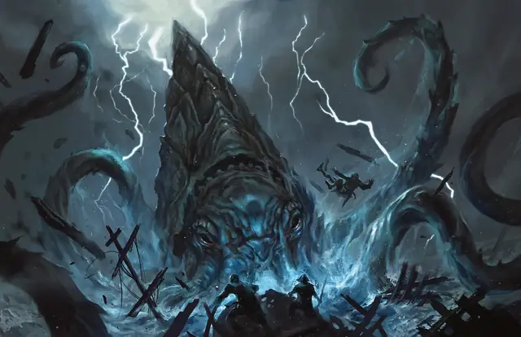

Кракен
Kraken
Громадное Чудовище (Титан), Хаотичное Злое

Класс Защиты 18 Инициатива +14 (24)
Хиты 481 (26к20 + 208)
Скорость 30 футов, Плавания 120 футов
| мод | спас | ||
|---|---|---|---|
| СИЛ | 30 | +10 | +17 |
| ЛОВ | 11 | +0 | +7 |
| ТЕЛ | 26 | +8 | +15 |
| мод | спас | ||
|---|---|---|---|
| ИНТ | 22 | +6 | +6 |
| МДР | 18 | +4 | +11 |
| ХАР | 20 | +5 | +5 |
Иммунитеты Холод, Электричество; Испуганный, Опутанный, Парализованный, Схваченный
Чувства пассивное Восприятие 21, Истинное зрение 120 футов
Языки понимает язык Бездны, Инфернальный, Небесный и Первичный, но не говорит, Телепатия 120 фт.
Опасность 23 (50 000 опыта или 62 000 опыта в Логове; БВ +7)
Особенности
Амфибия. Кракен может дышать как воздухом, так и под водой.
Легендарное сопротивление (4/день, или 5/день в Логове). Если кракен проваливает спасбросок, он вместо этого может в нём преуспеть.
Осадное чудовище. Кракен наносит двойной урон объектам и постройкам.
Действия
Мультиатака. Кракен совершает две атаки Щупальцем и использует Бросок, Удар молнии или Проглатывание.
Щупальце. Бросок рукопашной атаки: +17, досягаемость 30 фт. Попадание: 24 (4к6 + 10) Дробящего урона, и цель Схвачена (Сл освобождения от захвата 20) одним из десяти щупалец; пока цель Схвачена, она также Опутана.
Бросок. Кракен швыряет Схваченное им существо Большого размера или меньше в видимое им пространство (не находящееся в воздухе) в пределах 60 футов от него. Спасбросок Ловкости: Сл 25, брошенное существо и каждое существо в точке назначения. Провал: 18 (4к8) Дробящего урона, и цель Опрокидывается. Успех: Только половина урона.
Удар молнии. Спасбросок Ловкости: Сл 23, одно видимое кракеном существо в 120 футах. Провал: 33 (6к10) урона Электричеством. Успех: Только половина урона.
Проглатывание. Спасбросок Ловкости: Сл 25, одно Схваченное кракеном существо (кракен может держать проглоченными до четырёх существ одновременно). Провал: 23 (3к8 + 10) Колющего урона. Если цель Большого размера или меньше, она становится проглоченной кракеном, а состояние Схваченный оканчивается. Проглоченное существо Опутано и имеет Полное укрытие от атак и прочих эффектов, исходящих снаружи кракена; кроме того, оно получает 24 (7к6) урона Кислотой в начале каждого хода кракена.
Если кракен получает за один ход не менее 50 урона от проглоченного существа, в конце этого хода он должен совершить спасбросок Телосложения Сл 25; при провале он отрыгнёт всех проглоченных существ, которые падают Опрокинутыми в пространстве в пределах 10 футов от кракена. Если кракен умирает, проглоченное существо теряет состояние Опутанный и может освободиться из трупа, потратив 15 футов перемещения и оказываясь на выходе Опрокинутым.
Легендарные действия
У этого существа есть 3 использования Легендарных действий (или 4 использования в его Логове); оно может немедленно после окончания хода другого существа потратить одно использование, чтобы совершить одно из следующих действий. Существо восполняет все потраченные использования в начале каждого своего хода.
Грозовой разряд. Кракен использует Удар молнии.
Токсичные чернила. Спасбросок Телосложения: Сл 23, каждое существо в 15-футовой Эманации, исходящей от кракена, пока он находится под водой. Провал: Цель Ослеплена и Отравлена до конца следующего хода кракена. Затем кракен может переместиться на расстояние вплоть до значения его Скорости. Провал или успех: Кракен не может совершить это действие повторно до начала своего следующего хода.
Бонус мастерства +7
Среда обитания Под водой
Сокровища Любые
Кракен
Морское чудовище из легенд
Кракены — древние орудия богов, которые дремлют в глубочайших безднах океана и ждут своего часа, чтобы восстать и обрести власть над миром. Эти огромные ужасные существа со множеством щупалец обладают невероятной физической силой и пугающей хитростью. Их могучие конечности разбивают корабли и обрушивают башни, а благодаря способности повелевать бурями они могут поразить своих врагов молнией.
Как правило, кракенов не интересуют дела смертных. В давно забытые времена боги создали этих монстров, чтобы использовать в своих войнах. С тех пор большинство кракенов исчезли в пучинах морей до тех пор, пока их создатели вновь не призовут их. Некоторые всё ещё служат своим божественным хозяевам и защищают сокровища морских глубин или даже целые океаны. Другие отвернулись от своих создателей и теперь преследуют собственные цели, оказывая влияние как на подводный, так и наземный мир.
Кракены редко выходят на поверхность, и их редкие появления предвещают времена перемен и страшного суда. Пробудившись, эти титаны сразу же атакуют прибрежные города или целые эскадры кораблей. Нападения прекратятся, лишь когда их гнев будет умиротворён, их хозяева получат желаемое или их самолюбие будет удовлетворено ценными дарами. Совершите бросок по таблице «Нападение кракена» для вдохновения или выберите сами разрушения, которое может причинить кракен.
Нападение кракена
| 1к8 | Разгневанный кракен… |
| 1 | Похищает судно правителя или другого важного члена общества. |
| 2 | Атакует поселение снизу, выходя из затопленных развалин, скрытых аквиферов* или канализации. |
| 3 | Разрушает маяк или прибрежную башню и переносит её остатки вместе с обитателями на таинственный остров. |
| 4 | Обрушивает молнию на корабли, вошедшие на его территорию. |
| 5 | Буксирует корабли к скоплениям морских водорослей, из которых трудно выбраться. |
| 6 | Запруживает реку или блокирует выход города к морю. |
| 7 | Пожирает всю морскую живность рядом с рыбацким поселением, обрекая его на голод. |
| 8 | Управляет морским вторжением мерфолков, сахуагинов или штормовых гигантов. |
Аквифер или водоносный горизонт — осадочная горная порода, состоящая из слоёв, трещины или пустоты между которыми заполнены подземными водами.
Логова кракенов
Логова кракенов обычно расположены в затонувших храмах, местах проведения древних ритуалов или узлах древней магической силы. Они могут быть расположены под водоёмами с пресной или солёной водой и часто соединены с лабиринтами затопленных подземных тоннелей или сетью магических порталов.
Местность, в которой находится логово кракена, изменяется из-за его присутствия, что создаёт следующие эффекты:
• Тиран океана. Кракен господствует над морскими созданиями в своих владениях. Все Животные в пределах 1 мили от логова Очарованы, пока находятся в этой области.
• Море и бури. Пока кракен находится в логове, он может творить заклинание Власть над погодой, не нуждаясь в компонентах (заклинательная характеристика — Интеллект).
Если кракен умирает или перемещает своё логово в другое место, все эти эффекты мгновенно исчезают.